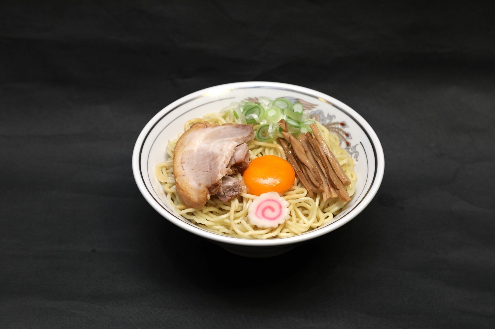

MENU
お品書き
平日昼限定。
テイクアウトも承ります。
平日昼限定
ABURA SOBA
油そば
チャーシュー・めんま・ナルト
並税込 748円
大税込 935円
平日昼限定
TOKUSEI
特製油そば
チャーシュー増し・めんま増し・ねぎ増し・玉子付
並税込 1,298円
大税込 1,485円
TOKUSEI
特製は、全部増し。
チャーシュー増し
ねぎ増し
めんま増し
玉子付
ナルト
TOPPING
トッピング
生卵
130円
税込 143円
ネギ盛り
150円
税込 165円
チャーシュー1枚
200円
税込 220円
めんま
200円
税込 220円
青唐
130円
税込 143円
ナルト6枚
200円
税込 220円
ちょいめし
150円
税込 165円
 8回混ぜる
8回混ぜる まずは3口、そのまま
まずは3口、そのまま お酢2周・ラー油1周
お酢2周・ラー油1周※お好みで、にんにくを増してください。
食べ方のこだわり →
- HOURS
- 平日昼限定
（ランチタイム） - TAKE OUT
- テイクアウト
承ります - PRICE
- 税別で表示
（小さい数字は税込）
8回、混ぜて。
7じゃ足りない、9じゃ多すぎ。